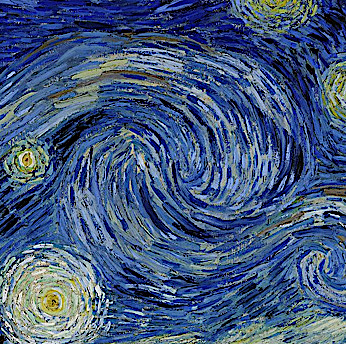
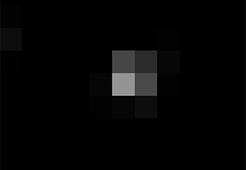
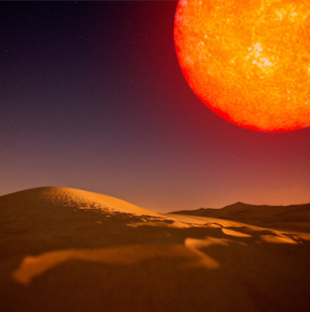
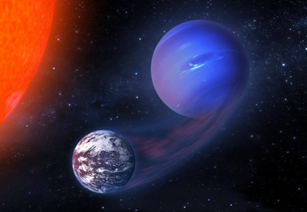
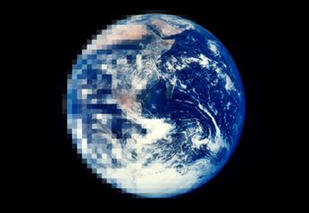

Rodrigo Luger
astronomer • flatiron fellow • not actually left-handed

starry analytic lightcurves
Computation of transit and secondary eclipse light curves of exoplanets, light curves of eclipsing
binaries, rotational phase curves of exoplanets, light curves of planet-planet and planet-moon
occultations, and more. By modeling celestial body surface maps as sums of spherical harmonics,
starry does all this analytically and is therefore fast, stable, and differentiable.
starry is coded in C++ and wrapped in Python.
planetplanet dynamical code
Code for predicting and modeling planet-planet occultations, as well as
transit and secondary eclipse light curves, phase curves, mutual transits, and more.
pale green dot aurorae on proxima b
In this paper, I showed how auroral emission from the habitable zone planet Proxima Centauri b can be used
to characterize its orbital properties, its mass, and its atmospheric composition.

trappist-1 search for planet h
I used data from K2 to confirm the period of TRAPPIST-1h, measure the rotation period of
the star, and establish that all seven planets in TRAPPIST-1 are in three-body Laplace
resonances.

mirage earths m dwarf water loss
In this paper, I showed how the extended pre-main sequence phase of M dwarfs can lead to
extreme water loss and the possible buildup of oxygen in the atmospheres
of terrestrial planets in the habitable zones of these stars.
about about rodrigo
I'm a Flatiron Fellow at the CCA in New York City, working on finding novel
ways to detect and characterize exoplanets, particularly those in the
habitable zone. I mainly work with light curves from the K2 mission,
and I'm gearing up to tackle science with TESS and JWST.
Outside the office I love to hike, bike, swim,
craft lattes, faulty parallelism, and oxford commas.
everest k2 precision photometry
everest is an open-source pipeline for removing instrumental noise from light curves generated by K2.
The code exploits correlations across the pixels on the Kepler CCD to remove systematics introduced by the spacecraft's pointing error,
yielding light curves with precision comparable to that of the original Kepler mission.

hecs habitable evaporated cores
The extended pre-main sequence phase of M dwarfs can drive vigorous hydrodynamic escape from
their planets. In this paper, I showed how in some cases, small, gas-rich planets can lose
their hydrogen envelopes and form HECs.

vplanet the virtual planet
VPLANET models the evolution of potentially habitable planets
from their formation to the present day, accounting for processes such as stellar evolution, atmospheric escape,
climate evolution, etc.